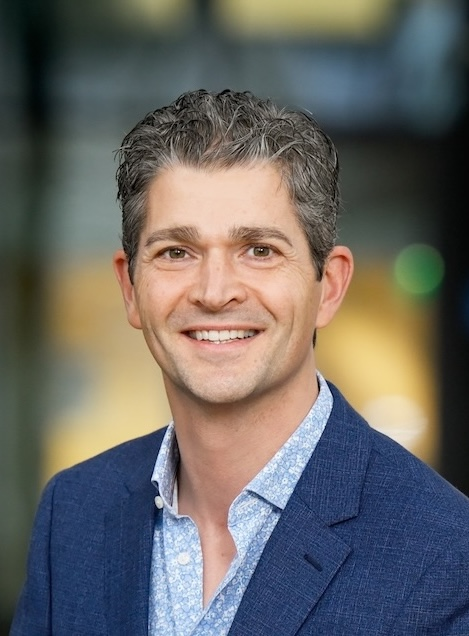

|
 |
|
News
Invited presentation at CT Identif, November 20, 2025, Paris
Mathyn van Dael will defend his thesis on January 23, 2025
Lars van de Kamp will defend his thesis on December 2, 2025
About
We develop data-driven control methods that push precision machines to their physical limits.
My team and I perform application-driven fundamental research at the intersection of system identification, control theory, and machine learning to learn models and controllers for complex dynamical systems directly from data, providing the obustness guarantees required in high-tech applications.
Based in the high-tech ecosystem of Eindhoven, we tackle challenges occurring in advanced motion control for precision mechatronic systems. We collaborate closely with industry and research partners on applications ranging from semiconductor manufacturing equipment and precision printing systems to space and astronomical instrumentation.
Beyond precision engineering, we work with domain experts to explore new applications of data-driven control in health, energy, and mobility.
More information:
Bio
Tom Oomen is a full professor in the Department of Mechanical Engineering at Eindhoven University of Technology, The Netherlands. He has held academic positions at KTH Royal Institute of Technology (Sweden), The University of Newcastle (Australia), and Delft University of Technology. He is the recipient of awards, including the 7th Grand Nagamori Award, the Corus Young Talent Graduation Award, and NWO Veni and Vidi personal grants. He currently serves as Senior Editor of IEEE Control Systems Letters (L-CSS) and Co-Editor-in-Chief of IFAC Mechatronics.
His research focuses on data-driven control of complex dynamical systems, at the intersection of system identification, control theory, and machine learning. His work addresses precision mechatronics and advanced motion control, with applications in semiconductor manufacturing, precision printing systems, space instrumentation, and other high-tech industrial domains. He also collaborates with domain experts to explore applications in health, energy, and mobility.
Contact
Tel: +31 40 247 8332
Email: T.A.E.Oomen (at) tue.nl
Postal address: upon request through email (please do not use the university address).